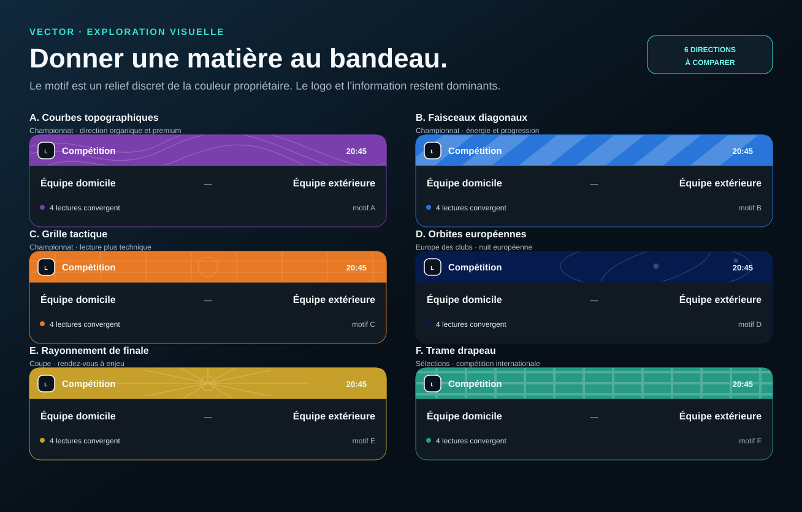

VECTOR · EXPLORATION VISUELLE
Motifs de bandeau
Six directions pour faire vivre la couleur de la compétition sans concurrencer le logo ni les lectures du match.

Six directions pour faire vivre la couleur de la compétition sans concurrencer le logo ni les lectures du match.
